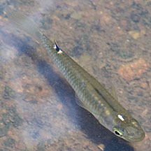
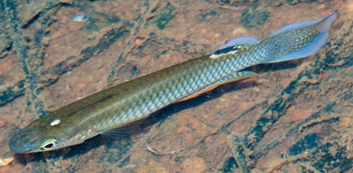

|
|
| fishes text index | photo index |
| Phylum Chordata > Subphylum Vertebrate > fishes |
| Rivulines Aplocheilus panchax* Family Aplocheilidae updated Sep 2020 What are Rivulines? Rivulines belong to Family Aplocheilidae. According to Fishbase: The family has 15 genera and 310 species. They are also known as Killifishes, Whitespot toothcarps or Tinheads. So far, the only Rivulines native to Singapore is the Whitespot toothcarp. The native: The Whitespot toothcarp (Aplocheilus panchax) resembles a guppy. It is native to Singapore and Southeast Asia. Up to 6cm long. A slender silvery fish with a shiny white spot at the top of its head. There is also a dark spot on its dorsal fin. According to Yeo and Lim, it is locally widespread in streams in open, usually coastal areas, and also in some inland reservoirs. Elsewhere it is found in lowland wetlands to estuaries and peats, also found in ponds and ditches, reservoirs and mangrove creeks. It prefers clear water in areas with dense growths of rooted or floating plants. The non-native: According to Yeo and Lim, the Striped panchax (Aplocheilus lineatus) is non-native and found in freshwater in Bukit Batok Nature Park and Singapore Botanic Gardens, probably introduced by humans. These fishes are popular in home aquariums. Looks similar to the Whitespot toothcarp (Aplocheilus panchax) but has narrow black bars, irridescent yellow spots on the side of the body and filamentous extensions on the pelvic fins. |
 Whitespot toothcarp (Aplocheilus panchax) Admiralty Park, Mar 11 |
 Whitespot toothcarp (Aplocheilus panchax) Admiralty Park, Mar 11 |
| What do they eat? According to
FishBase, they feed mainly on insects and have been used for mosquito
control. Human uses: They are said to be a popular aquarium fish although they are also reported to be difficult to maintain in captivity. |
*Species are difficult to positively identify without close examination.
On this website, they are grouped by external features for convenience of display.
| Whitespot on Singapore shores |
On wildsingapore
flickr
|
| Family
Aplocheilidae recorded for Singapore from Wee Y.C. and Peter K. L. Ng. 1994. A First Look at Biodiversity in Singapore. +other observations (e.g., Singapore Biodiversity Records)
|
Links
References
|